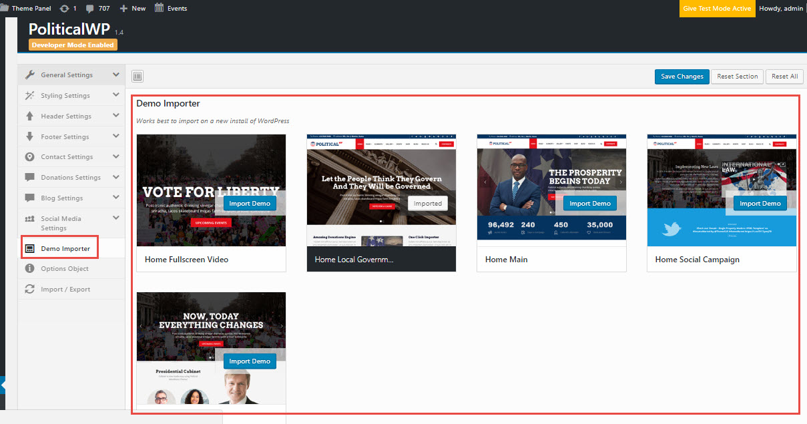

PoliticalWP - Multipurpose Campaign, Political, Election WordPress Theme
- by: ThemeSLR
- Support via email: support@themeslr.com
- Support via ThemeForest: Take me there
-
Our demos will quickly show you a lot of reasons why PoliticalWP is probably the most compact, user friendly Political, Campaign, Election Non-Profit WordPress Theme of the moment. The theme comes with specific options and features, build by professionals for professionals. The most important part of the theme is that it comes built-in with a lot of services which actually are “Ready to go” after importing the demo on your site.
PoliticalWP was created to simplify the process of having a well-done website, for any Political, Campaign, Election Non-Profit Organisaiton or Individual!
Thank you for purchasing our theme!
Some features of the Theme
- One Click Demo Importer
- Easy Installation & Setup
- Fully Customizable Options
- Retina Ready
- Infinite Colors & Skins
- Powerful Customization Options
- Font, Icons Instead of Images
- Unique CSS3 Animations
- Well documented
- Constant Updates & New Features
- Incredible Shortcode Options
- TSLR Testimonials
- TSLR Portfolios
- TSLR Clients
- TSLR Members
- TSLR Services
- Multiple Headers
- Multiple Footers Variants
- Customisable Page Preloader
- Unlimited Sidebar Creation
- Custom Widgets
- Optimized For Speed
- Visual Composer Included
- Revolution Slider Included
- Compatible with Contact Form 7
- Powerful Theme options panel
- 30+ custom shortcodes
- Custom Menu Per Page/Post
- Custom, editable 404 Page (NEW)
- Premium dedicated support included;
Install WordPress
For WordPress Installation you can check the Famous 5-Minutes Install here :
http://codex.wordpress.org/Installing_WordPress
or you can watch the following video.
Theme Installation WordPress
The first option on how to install this Theme would be to directly upload the politicalwp.zip file via WordPress Theme Uploader.
- >Log into your WordPress dashboard
- >Navigate to Appearance > Themes
- >Click Install Themes
- >Click Upload
- >Now you just need to find the "politicalwp.zip" file in the Upload folder and hit Install now.
If you are experiencing any issues during the installation I would recommend to check out this Screencast by Envato
Theme Installation via FTP
The second option on how to install our Theme would be the upload via FTP manager. It really doesn't matter which of the two ways you choose, just choose the one you feel more comfortable with.
- 1. Login to your FTP account and navigate to your WordPress Installation directory
- 2. Navigate to the folder
/wp-content/themes/ - 3. Upload the "politicalwp" folder (not the .zip-file). This is the folder located inside the "Upload" folder in the zip-file you've downloaded from Themeforest.
- 4. Now log into your WordPress backend
- 5. Navigate to Appearance > Themes
- 6. Find the Theme and click Activate
If you are experiencing any issues during the installation I would recommend to check out this Screencast by Envato
Install & Setup Plugins
So at this stage you have probably noticed a warning, asking you to install recommended plugins. This is needed to get the Theme Panel plugin and a few other plugins for the theme to work perfectly. Installing that is very simple, you just need to click Begin installing plugins and you will be redirected to the plugin installation page where you can install any Plugin you want or you need.
Import Demo Data - One-Click-Install
This theme comes with an amazing built-in feature: One-Click-Install -> Possibility to import demo data of the theme with one click only, and make your site look 1:1 with our demo.
Sounds cool? How can I install the demo?
Go to your WordPress Admin Panel -> Theme Options Panel -> Demo Importer

Importing Revolution Slider Demo
Demo-sliders are located into the downloaded package from themeforest in /sampledata/Revolution_Sliders/
- Slider 1:
better-youtube-gallery.zip - Slider 2:
duotone1.zip
(*) - The sliders are automatically imported when the Demo Importer is fired. After completing the import the site will contain all demo data + revolution sliders
Theme Options Panel
If you want to change the general Options of the Theme, go to your WordPress Admin Dashboard Area to Theme Options Panel. Here you have a tabbed Navigation where you can change a lot of Options of your new Theme:
- General Settings
- Page Preloader
- Sidebars
- Styling Settings
- Global Fonts
- Skin colors
- Typography
- Header Settings
- Header - General
- Logo & Favicon
- Header - Top Small
- Header - Main Big
- Fixed Sidebar Menu
- Footer Settings
- Footer Top Rows
- Footer Bottom Bar
- Contact Settings
- Blog Settings
- Blog Archive
- Author Archive
- Categorie Archive
- Tags Archive
- Search Archive
- Single Post
- 404 Page Settings
- Social Media Settings
- Demo Importer
- Import / Export

TSLR Widgets
PoliticalWP Theme comes with custom widgets which can be found in your WordPress Admin Area under Appearance > Widgets.
- TSLR - Post thumbnails slider
- TSLR - Recent Posts with thumbnails
- TSLR - Social icons widget
- TSLR - Testimonials slider
TSLR Shortcodes
PoliticalWP comes with VISUAL COMPOSER Plugin included, so any customer of the theme can use this amazing drag and drop page builder.
Besides default Visual Composer shortcodes, PoliticalWP comes with +30 custom shortcodes.
PoliticalWP comes a huge list of shortcodes integrated directly into Visual Composer Plugin
- Portfolio
- Members - Essential Grid Shortcode
- Service
- Contact Details
- Contact
- Blog Post
- Google Map
- Testimonials Slider
- Clients
- Heading with Title and Subtitle
- Social Icons
- Services Features
- Featured Post
- Skill Counter
- Pricing Table
- CountDown
- Icon List Item
- Alert
- Jumbotron
- Panel
- Thumbnails custom content
- List Group
- Buttons
Support
You get free 6 month support with this item. If you need some help or found a bug or issue with the theme, you can always contact us here via email and we will respond to you within 1 day.
Have a problem with this theme? Ask for support!
Change LOG
Full changelog can be checked on themeforest item page.